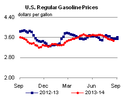
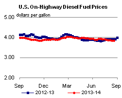
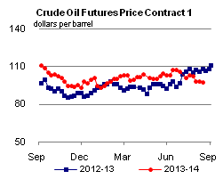
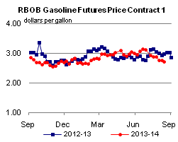
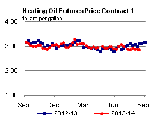
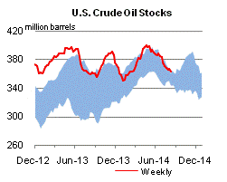
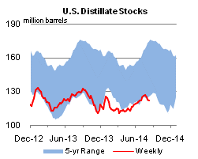
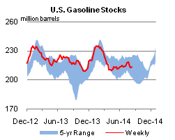
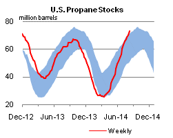

Released: August 20, 2014
Next Release: August 27, 2014
Increased production and infrastructure constraints open crude oil price spread between Midland and Cushing
Increasing production of crude oil in the Permian Basin has outpaced pipeline infrastructure to move the crude to refineries, causing prices for crude in the Permian (at Midland, Texas) to fall below similar crudes priced at Cushing, Oklahoma (Figure 1). While the discount of Midland prices to Cushing prices has been increasing for almost a year, recent refinery outages in the region have caused it to widen substantially. Several infrastructure projects that will allow more crude to flow from the Permian to the U.S. Gulf Coast are expected to come online soon, which should narrow the discounts of crude oil at Midland.
{kind=link}
This week, the WTI-Midland to WTI-Cushing discount reached $17.50 per barrel, surpassing the previous record discounts of late 2012, when production exceeded pipeline takeaway capacity. Those record discounts began easing when Magellan Midstream Partners in 2013 reversed and repurposed its Longhorn pipeline to move crude from the Permian to Houston.
Strong production is again causing weak prices in the Permian. In its latest projections in the Drilling Productivity Report (DPR), EIA estimates that in August Permian production will be almost 1.7 million barrels per day (bbl/d), 0.3 million bbl/d more than a year ago. This time around, however, refinery outages are also contributing to widening differentials. Trade press has reported that Phillips 66 has shut down for repairs its 140,000-bbl/d refinery in Borger, Texas, which uses crudes produced in the Permian. In addition, outages at refineries in Houston and Port Arthur, Texas, are reducing demand for Permian crude oil.
{kind=link}
The current situation in the Permian is beginning to affect the two Midland-priced grades of crude, WTI and West Texas Sour (WTS), differently. Most of the recent production increases in the Permian have been light sweet WTI grade crude. The increase in Permian light sweet production combined with increasing supplies of light sweet crudes from other Gulf Coast producing regions, such as the Eagle Ford, have put downward pressure on the price of Midland WTI. While production of sour crude has also grown, it has not increased as much as light sweet production. The significant capacity of many Gulf Coast refineries to process sour crude oil has supported the WTS Midland price. Midland WTS is currently trading at a $9-per-barrel premium to Midland WTI.
{kind=link}
In addition to the 225,000-bbl/d Longhorn Pipeline, the first expansions on the Sunoco Logistics Partners Permian Express pipelines and other portions of Sunoco's pipeline system also came on-line in 2013. However, the increase in crude oil production has now overwhelmed these expansions, and additional pipeline expansions are under construction. Magellan's 300,000-bbl/d BridgeTex Pipeline, which will move crude from West Texas to refining centers in Houston, Texas City, and Galveston, is expected to begin operating soon. And, beginning in early 2015, the Cactus Pipeline, with an expected capacity of 200,000 bbl/d, will move Permian crude south to connect with an expanded Eagle Ford Pipeline that will deliver crude to Corpus Christi, Texas.
Gasoline and diesel fuel prices decrease
The U.S. average retail price for regular gasoline fell to $3.47 per gallon as of August 18, 2014, three cents lower than the previous week, and eight cents lower than the same time last year. Prices decreased in all regions of the nation except for the Rocky Mountains, where the average price increased by less than a cent to $3.66 per gallon. The largest price decline came in the Midwest, where prices were down six cents to $3.40 per gallon. The East Coast and West Coast prices each fell three cents, to $3.43 and $3.85 per gallon, respectively. The Gulf Coast average price decreased a penny to $3.26 per gallon.
Average U.S. diesel fuel prices decreased one cent this week to $3.84 per gallon, seven cents lower than this time last year. Diesel fuel prices fell in all areas of the country, with the East Coast, Midwest, Gulf Coast, and Rocky Mountain prices all down by one cent, to $3.88, $3.78, $3.74, and $3.87 per gallon, respectively. The West Coast price fell less than a penny to remain at $4.02 per gallon for the fourth straight week.
Propane inventories continue to rise
U.S. propane stocks increased by 2.5 million barrels last week to 72.8 million barrels as of August 15, 2014, 10.9 million barrels (17.7%) higher than a year ago. Gulf Coast inventories increased by 1.2 million barrels and Midwest inventories increased by 1.1 million barrels. East Coast inventories increased by 0.2 million barrels while Rocky Mountain/ West Coast inventories remained unchanged. Propylene non-fuel-use inventories represented 5.5% of total propane inventories.
Text from the previous editions of This Week In Petroleum is accessible through a link at the top right-hand corner of this page.
|  |  | ||||||
| Retail Data | Change From Last | Retail Data | Change From Last | ||||
| 08/18/14 | Week | Year | 08/18/14 | Week | Year | ||
| Gasoline | 3.472 | Diesel Fuel | 3.835 | ||||
|  |  | ||||||||||||||||||||||||||
|
 | ||||||||||||||||||||||||||
| *Note: Crude Oil Price in Dollars per Barrel. | |||||||||||||||||||||||||||
|  |  | ||||||
|  |  | ||||||
| Stocks Data | Change From Last | Stocks Data | Change From Last | ||||
| 08/15/14 | Week | Year | 08/15/14 | Week | Year | ||
| Crude Oil | 362.5 | Distillate | 121.5 | ||||
| Gasoline | 213.3 | Propane | 72.830 | ||||